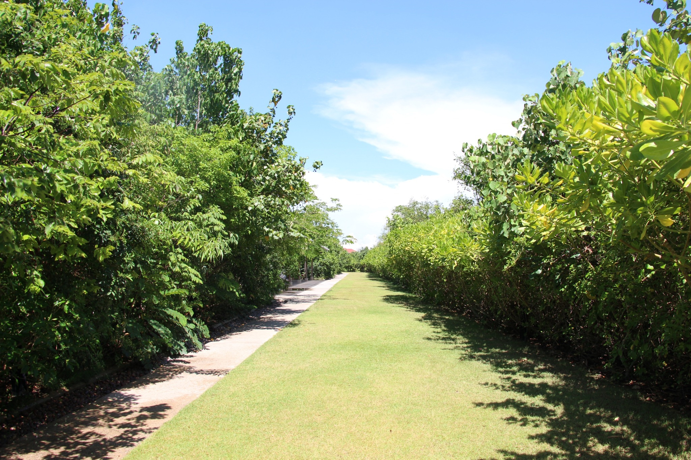

HISTORY
ความเป็นมาของป่าในกรุง
ความเป็นมาของโครงการ
โครงการป่าในกรุง ถ.สุขาภิบาล 2 เป็นการพัฒนาพื้นที่สีเขียวในที่ดินของ ปตท. จำนวน 12 ไร่ 1 งาน 2 ตารางวา ภายใต้แนวทางการส่งเสริมพื้นที่สีเขียวในเขตเมืองของกลุ่ม ปตท. หรือ "PTT Green in the City" ได้ออกแบบสัดส่วนเป็นพื้นที่ป่า 75% พื้นที่น้ำ 10% พื้นที่ใช้งาน 15% ป่าเป็นหลัก มีการออกแบบอาคารที่กลมกลืนกับสิ่งแวดล้อมเป็นต้นแบบนวัตกรรมอาคารเขียว เพื่อให้เป็นแหล่งเรียนรู้การปลูกป่าของ ปตท. และการปลูกป่าเชิงนิเวศแบบยั่งยืน ซึ่งในอนาคตป่านี้จะเติบโตและสร้างความอุดมสมบูรณ์ให้กับพื้นที่ เป็นรูปแบบการศึกษาและเรียนรู้ป่าในเมือง เชื่อมโยงและสร้างความใกล้ชิดระหว่างคนกับป่า
วัตถุประสงค์โครงการ
ปลูกป่าเพื่อเพิ่มพื้นที่สีเขียวให้กับคนเมือง ปลูกป่าเชิงนิเวศแบบยั่งยืน เพื่อให้เกิดป่าทีใกล้เคียงธรรมชาติดังเดิมในพื้นที่กรุงเทพมหานคร เป็นแหล่งเรียนรู้เรื่องการปลูกป่าตามวิถี ปตท. ซึ่งเป็นองค์ความรู้ที่เกิดจากการปลูกป่า 1 ล้านไร่ นับตั้งแต่ปี พ.ศ. 2537 ให้แก่ประชาชน นิสิต นักศึกษา และนักเรียน ที่สนใจ
การสร้างป่านิเวศ
ใช้แนวทางการศึกษาและทฤษฏีการฟื้นฟูป่าธรรมชาติของ ศาสตราจารย์ ดร.อาคิระ มิยาวากิ ซึ่งเป็นป่าที่มนุษย์ฟื้นฟูขึ้นตามหลักการฟื้นฟูป่านิเวศ (ป่าธรรมชาติ) พันธุ์ไม้ที่ปลูกต้องเป็นพันธุ์ไม้ท้องถิ่นดั้งเดิมของพื้นที่ เตรียมกล้าไม้ที่ระบบรากแข็งแรง เน้นการปลูกต้นไม้ที่เพาะขึ้นจากเมล็ด ระยะห่างของการปลูก 3-4 ต้นต่อตารางเมตร ปลูกพันธุ์ไม้ หลากลายชนิดปะปนกัน รูปแบบการปลูกแบบสุ่ม (Random) ไม่เป็นแถวเป็นแนว เลียนแบบธรรมชาติ ประกอบด้วยพันธุ์ไม้หลายระดับ ทั้งไม้ยืนต้น (Tree) ไม้พุ่ม (Shrub) และไม้พื้นล่าง (Herb) ปลูกและดูแลด้วยความพิถีพิถัน เช่น การสร้างเนินดิน การนำกล้าไม้จุ่มน้ำ การคลุมด้วยฟางข้าว เป็นต้น
ชนิดพันธุ์ไม้ที่ใช้ปลูกในโครงการ
สัดส่วนของพื้นที่แบ่งเป็น พื้นที่ป่า 75% (จำนวน 9 ไร่) พื้นที่น้ำ 10% (จำนวน 1.2 ไร่) พื้นที่ใช้งาน 15% (จำนวน 1.8 ไร่) ในพื้นที่มีการจัดสรรให้มีพันธุ์ไม้ตามลักษณะป่าชนิดต่างๆ เช่น ป่าดิบที่ลุ่ม ป่าเบญจพรรณ ป่าเต็งรัง ป่าน้ำกร่อย ป่าชายเลน ป่ารอบน้ำตก/เขาหินปูน ซึ่งความหลากหลายของพันธุ์ไม้ที่ใช้ปลูกมีทั้งพันธุ์ไม้หายาก พันธุ์ไม้พื้นเดิมของกรุงเทพมหานคร และพันธุ์ไม้ป่าตามประเภทป่าชนิดต่างๆ มีจำนวนกว่า 200 ชนิด เช่น กรวยป่า กระเจียว ขันทองพยาบาท พระเจ้าห้าพระองค์ แคแสด จันทน์ชะมด สมอไทย ทองพันช่าง เป็นต้น นอกจากนั้นยังมีการบริหารจัดการระบบน้ำสำหรับใช้ในพื้นที่โครงการ โดยสัดส่วนพื้นที่ของน้ำ 10% (จำนวน 1.2 ไร่) เพื่อรองรับปริมาณน้ำฝน และเกิดระบบนิเวศอย่างครบวงจรของสิ่งมีชีวิต